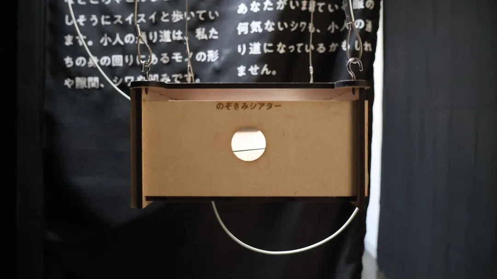
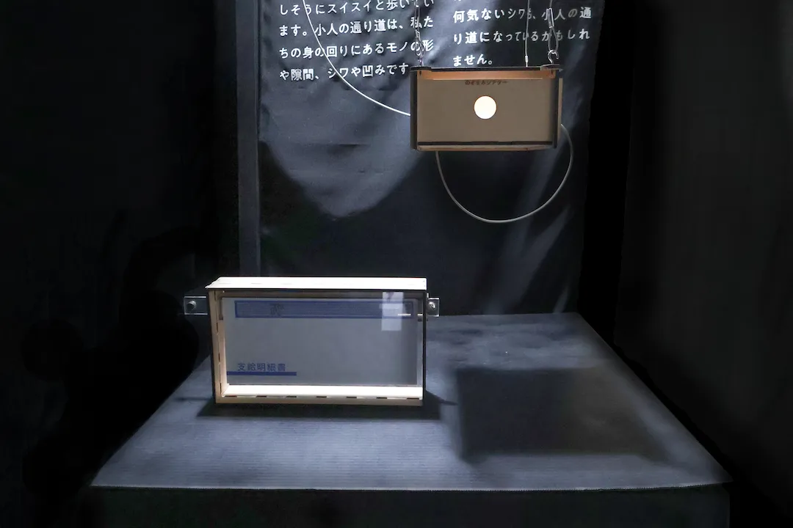
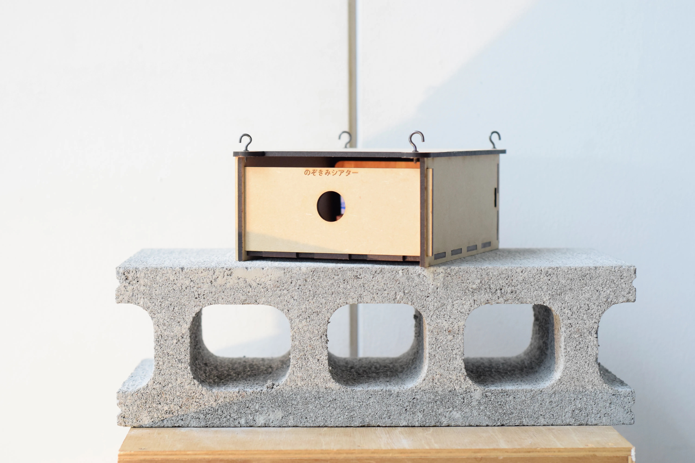

2024
名もなき小人の散歩道
散歩の始まりは、給与明細の窓。
小人の散歩を覗いてみると、人間では到底通れない、あんなところやこんなところを楽しそうにスイスイと歩いています。
小人の通り道は、私たちの身の回りにあるモノの形や隙間、シワや凹みです。
身近なモノの仕組みや現象を、道としてハックしながら器用に進んでいく様子を、のぞきみしてみてください。
あなたがいま着ている服の何気ないシワも、小人の通り道になっているかもしれません。
228×160×81(mm) 148×262×6(mm)
MDF / アクリル板（透明）/ OHPシート / iPhone


